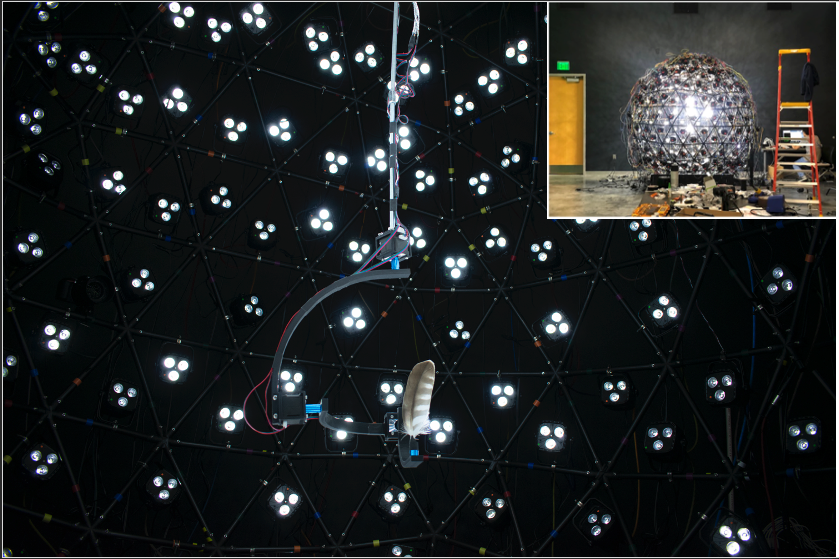
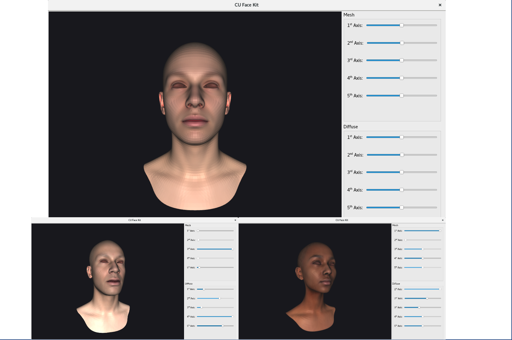
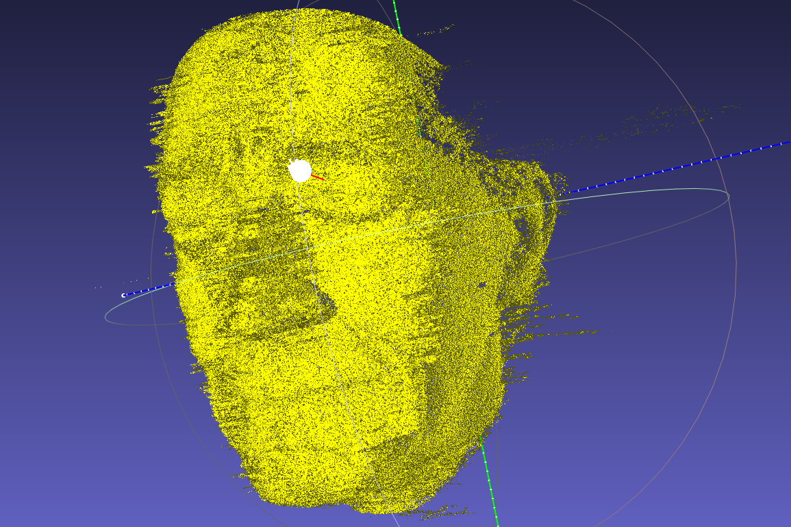
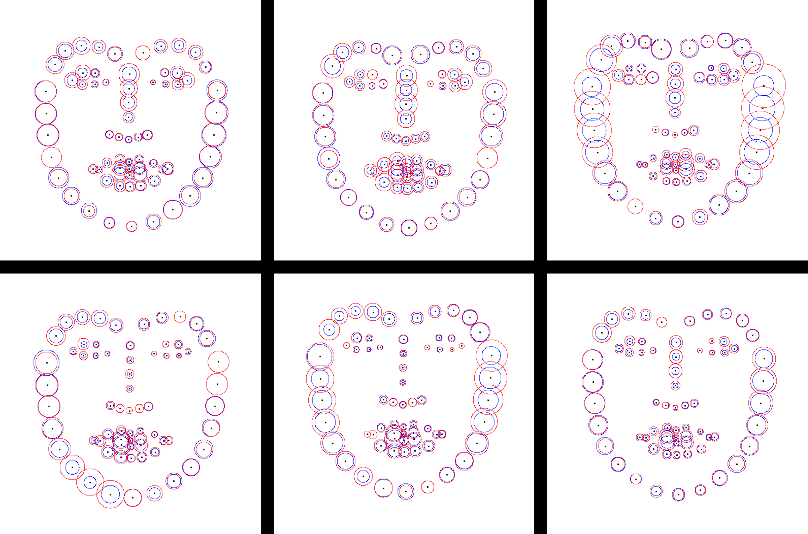

We built an 8 feet diameter variable illumination sphere in our lab to provide controllable illumination(e.g. colors, intensities, directions) for object capture. The dome has 364 RGBW LED DMX lights and 6 cameras. We developed and 3D printed an automated camera system to work in conjunction with a variable illumination sphere in order to photograph various materials being studied from any viewing angle and illuminated from any angle. We also created a software to control and synchronize all lights, cameras, and the universal stage. The software can change the colors and intensities of the lights, control the focal length, shuttle speed, and ISO of cameras, rotate the universal stage, and save all images to disk for later analysis.
-
Home
Projects
research
Teaching
Certificate
-
Variahle-illumination Sphere
 -
3D Morphable Model
The purpose of this project is trying to augment dataset with only few retopologized 3D face meshes. I applied Principal Component Analysis (PCA) on mesh points, textures over 48 retopologized facial dataset. Then I created a GUI based on PyQt5 which you can manually travel along each axices of the dataset to create new faces from mean face.
-
Realizing High-Quality Single-Shot Capture of Facial Geometry
Our main goal is realizing the face 3D geometry algorithm that is presented in the paper "High-Quality Single-Shot Capture of Facial Geometry." This paper is the foundation of the Disney Medusa Performance Capture System. The project is still processing. However, we have some results already!
-
Evaluating Effects of Focal Legth and Viewing Angle for Face Landmark Algorithm
The paper thoroughly evaluates the performance differences of the recently published deep learning facial landmark and alignment methods and traditional methods, due to camera lens and viewing angle variance. We found that none of those methods considered focal lens effects the landmark precision.
-
Countenance Tool (Software)
The Countenance Tool is our own sorftware which intends to integrate some features so that we can manipulate both 3D and 2D faces. The software is built in Python using PyQt5 bindings of the GUI library Qt5, and GLSL for 3D shading. My work on this project is to keep adding features on the tool. I've written code that is able to change camera focal length, rendering photorealistic images from 3D faces with landmarks on.
-
Light Stage: Hemisphere
This light stage is built to be able to provide controllable illumination (e.g. colors, intensities, directions) for object capture. My work on this project is mainly about constructing the light stage, testing and rewriting the existing lights, camera control software. The light stage control model is written in C# to customize Macros which talk to lights, cameras.